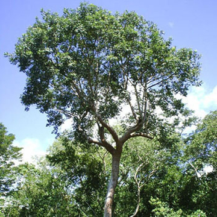
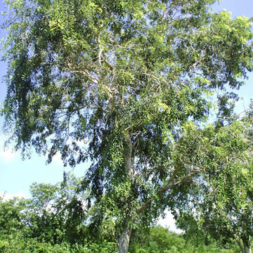
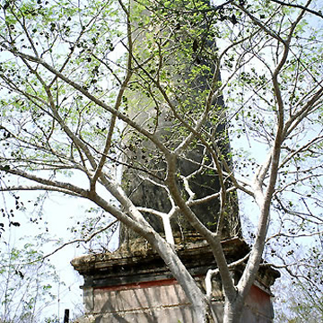
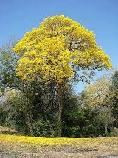

Plantas Endémicas de Yucatán5 Plantas EndémicasEn Yucatán, algunas plantas endémicas incluyen el balché, el jabín, el kitanchí y el makulis. También hay varias especies de orquídeas endémicas, como la *Epidendrum martinii*. El Gobierno del Estado de Yucatán enumera varias plantas, incluyendo la caoba, el cedro, la ceiba y el zapote. La Secretaría de Desarrollo Sustentable (SDS) proporciona fichas técnicas de flora nativa, incluyendo el *Bursera simaruba* (palo mulato), la *Caesalpinia gaumeri* (kitinché) y la *Cedrela odorata* (cedro). Balché
Árbol de hasta 10 m de altura, con follaje denso y redondeado; flores lila-morado muy llamativas. Florea de noviembre a enero. Frutos en vainas planas. Especie endémica de la península de Yucatán. Usado como ornamental. ChakáÁrbol de hasta 15 m de altura, tronco recto y escamoso, flores pequeñas y aromáticas, color crema-verdoso. Florea de febrero a mayo. Frutos en cápsulas drupáceas. JabínÁrbol de hasta 20 m, copa densa, hojas compuestas, flores en panículas, pétalos rosados. Florea de febrero a mayo. Fruto en vaina con alas de color café. PichÁrbol de 20 a 30 m, hojas bipinnadas, corteza clara con lenticelas. Flores verdes, frutos en vaina circular. Semillas grandes, ovoides, brillantes, con testa dura. Makuilis AmarilloÁrbol de hasta 18 m, tronco recto y fisurado, copa piramidal. Flores amarillas muy vistosas. Florea de febrero a mayo. Fruto en cápsula de hasta 40 cm, ligeramente retorcida. |